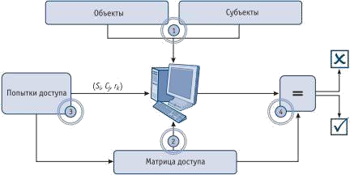
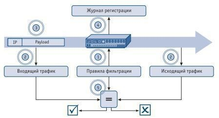

Лабораторная работа 17.
Изучение методики составления испытаний системы защиты информации
Цель работы: научиться составлять комплексную методику испытаний системы защиты, для выявления недоработок спроектированной системы защиты.
Теоретическая часть
В соответствии с «Доктриной информационной безопасности Российской Федерации» обеспечение безопасности информационных ресурсов от несанкционированного доступа представляет собой одну из составляющих национальных интересов России в информационной сфере. Это определяет необходимость выполнения специальных действий по оценке соответствия средств защиты информации от несанкционированного доступа, используемых при построении автоматизированных систем (АС), требованиям нормативных и иных документов по защите информации. В данной статье рассматриваются инструментальные средства и методы, которые могут быть использованы при проведении функционального тестирования систем и комплексов защиты по требованиям безопасности информации в соответствии с требованиями руководящих документов.
Испытания средств защиты информации от несанкционированного доступа
Как известно, руководящий документ (РД) «Средства вычислительной техники. Защита от несанкционированного доступа к информации. Показатели защищенности от несанкционированного доступа к информации» (Гостехкомиссия России, 1992) устанавливает 7 классов защищенности средств защиты информации (СЗИ) от несанкционированного доступа (НСД) на базе перечня показателей защищенности и совокупности описывающих их требований. Рассмотрим общий порядок проведения испытаний СЗИ от НСД на соответствие требованиям РД, предъявляемым к дискреционному принципу контроля доступа, а также к механизму очистки внешней памяти.
Порядок проведения данной проверки в общем случае выглядит следующим образом (рис. 1).

Рисунок 1 - Порядок проведения проверки
Порядок проведения данной проверки в общем случае выглядит следующим образом (рис. 1).
1) Создание тестовых субъектов(например, пользователей) S = {S1, S2,
..., Si, ..., Sn} и объектов доступа (например, объектов файловой системы) O =
{O1, O2, ..., O, ..., On}.
Настройка правил разграничения доступа субъектов испытываемого СЗИ от НСД к тестовым защищаемым объектам. Данная операция заключается в настройке матрицы доступа. Строка матрицы доступа соответствует субъекту Si, а столбец – объекту Oj. На пересечении строки и столбца указаны права доступа rv.Соответствующего субъекта к данному объекту.
Тестирование фактического наличия права rkу субъекта Sjпо отношению к объекту Oj(тестирование настроек СЗИ от НСД).
Сравнение фактических правдоступа с требуемыми правами, определенными в матрице доступа.
Для автоматизации процесса проверки реализации данного требования РД могут быть использованы программы семейств «Ревизор», «НКВД» или программы, написанные на языках сценариев (например, Perl или Python).
Порядок проведения данной проверки в общем случае выглядит следующим образом:
Настройка механизма очистки внешней памяти тестируемого СЗИ от НСД в соответствии с информацией, приведенной в эксплуатационной документации.
Создание тестовой последовательности символов на внешнем накопителе ЭВМ, на которой установлено тестируемое СЗИ от НСД.
Определение сектора накопителя, в котором располагается тестовая последовательность символов: данный сектор определяется путем поиска
тестовой последовательности на накопителе с использованием специализированного программного обеспечения (ПО).
Удаление созданного действием 2 файла путем применения штатных средств гарантированного удаления информации СЗИ от НСД.
Выполнение анализа сектора внешнего накопителя, определенного действием 3, на предмет наличия в нем созданной ранее последовательности символов (выполняется с помощью специализированного программного обеспечения).
Если тестовая последовательность не обнаружена, эксперт испытательной лаборатории (ИЛ) выносит вердикт о соответствии тестируемого СЗИ от НСД требованию РД[1] к очистке внешней памяти.
При проведении проверки реализации данного требования РД [1] могут быть использованы программный комплекс «Средство анализа защищенности «Сканер-ВС» (ПК «Сканер-ВС»), программы семейств
Terrier, «НКВД».
Требования к СЗИ от НСД, обеспечивающим безопасное взаимодействие сетей ЭВМ посредством управления межсетевыми потоками информации, предъявляет РД [2] «Средства вычислительной техники. Межсетевые экраны. Защита от несанкционированного доступа. Показатели защищенности от несанкционированного доступа к информации» (Гостехкомиссия России, 1997). Наиболее трудоемкие требования с точки зрения процесса поведения сертификационных испытаний предъявляются к функциям управления доступом (фильтрация данных и трансляция адресов).
Порядок проведения данных проверок в общем случае выглядит следующим образом (рис. 2).

Рисунок 2 - Порядок тестирования функций МЭ 1) Настройка правил фильтрации МЭ в соответствии с проверяемым
требованием РД [2].
Запуск ПО перехвата и анализа сетевых пакетов во внутреннем и внешнем сегментах сети.
Генерация сетевых пакетов из внутренней сети во внешнюю (или наоборот), прохождение которых разрешается (запрещается) в соответствии с правилами фильтрации межсетевого экрана.
Завершение перехвата сетевых пакетов, экспорт журнала регистрации разрешенных и запрещенных пакетов МЭ.
Исходя из полученных данных, эксперт ИЛ делает вывод о соответствии или несоответствии фактических (пакеты на входном интерфейсе МЭ, пакеты на выходном интерфейсе МЭ и фрагмент журнала регистрации событий МЭ) и ожидаемых результатов (правила фильтрации МЭ) тестирования. При их соответствии выносится вердикт о том, что МЭ отвечает требованию РД.
При проведении тестирования реализации требования РД к функциям управления доступом могут быть использованы, например, следующие программы: nmap, Packet Generator (генерация сетевых пакетов), wireshark, tcpdump (перехват и анализ сетевых пакетов), ПК «Сканер-ВС» (генерация сетевых пакетов, перехват и анализ сетевых пакетов).
Обязательный анализ защищенности АС выполняется в форме аттестации или сертификации на соответствие руководящего документа Гостехкомисии . В ходе проведения проверки анализируются фактические настройки СЗИ АС, их соответствие требованиям нормативных документов и эксплуатационной документации АС. Основное отличие от процедуры испытаний СЗИ заключается в том, что проверяемая АС должна быть настроена в соответствии с требованиями нормативных документов до начала проведения испытаний. Задача эксперта ИЛ(или органа по аттестации) заключается в анализе текущих настроек СЗИ АС и их влияния на безопасность информации, обрабатываемой в АС.При проведении анализа защищенности могут применяться программные продукты, используемые для проведения испытаний СЗИ по требованиям безопасности информации. Более подробную информацию о методах и инструментальных средствах, используемых при проведении анализа защищенности АС, можно найти в работе.
В качестве инструментального комплекса испытаний удобно воспользоваться средством анализа защищенности «Сканер- ВС»,позволяющим проводить большое количество типов проверок в соответствии с требованиями руководящих документов. Варианты использования программного комплекса (ПК) «Сканер-ВС» при проведении
функционального тестирования систем и комплексов защиты по требованиям безопасности информации приведены далее по тексту.
- РД «Средства вычислительной техники. Защита от несанкционированного доступа к информации. Показатели защищенности от несанкционированного доступа к информации» (Гостехкомиссия России, 1992):
генерация сетевых пакетов с необходимым для проведения испытаний набором атрибутов;
перехват и анализ сетевых пакетов.
2. РД «Средства вычислительной техники. Межсетевые экраны. Защита от несанкционированного доступа. Показатели защищенности от несанкционированного доступа к информации (Гостехкомиссия России, 1997):
проверка механизма очисткивнешней памяти.
3. РД «Автоматизированные системы. Защита от несанкционированного доступа к информации.
Классификация автоматизированных систем и требования по защите информации» (Гостехкомиссия России, 1992):
проверка очистки освобождаемых областей внешней памяти;
проверка подсистемы межсетевого экранирования;
поиск уязвимостей в ресурсахсети; локальный аудит паролей учетных записей ОС.
ПК «Сканер-ВС» обладает рядом заметных достоинств:
Полнота инструментария. ПО, входящее в состав ПК «СканерВС», позволяет проводить широкий диапазон проверок систем и комплексов защиты по требованиям РД ФСТЭК России и приказов Министра обороны Российской Федерации.
Простота использования. ПК «Сканер-ВС» представляет собой носитель информации, который запускает свою собственную среду (операционная система, производная от Linux) с предустановленным тестовым ПО. Это позволяет сократить временные расходы экспертов ИЛ на
поиск, установку и настройку ПО, применяемого при проведении испытаний, в том числе и операционной системы, под которой функционирует тестовое ПО.
Сертификаты соответствия. ПК «Сканер-ВС» является сертифицированным в системах сертификации СЗИ ФСТЭК России Минобороны России средством контроля эффективности применения СЗИ.